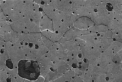

Although metals may look homogeneous to the naked eye, under the microscope they show a structure (the microstructure) which not only reflects the chemical composition of the metal, but also reveals evidence as to how it was made. The scanning electron microscope is particularly useful in this type of research as the composition of different parts of the structure within the metal can actually be measured.
In the 16th century, many of the working components of clocks were made of wrought iron. This is a soft, workable form of iron which could be made from blast furnace iron by a refining or 'finery' process. It has a distinct microstructure consisting of occasional masses of silicate slag, left over from the iron smelting operation, dispersed though the iron.